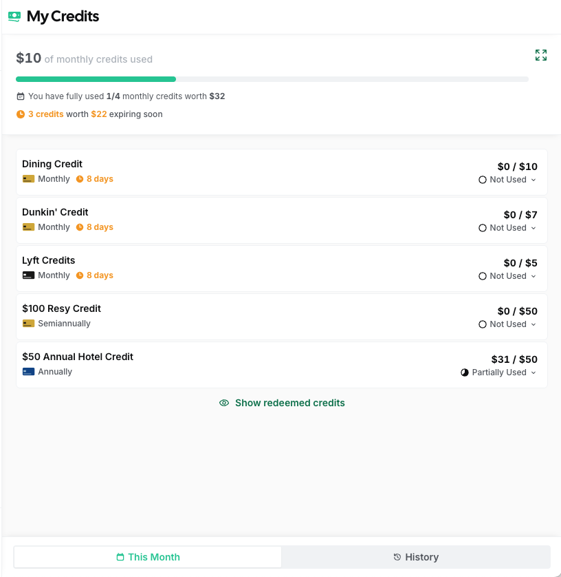
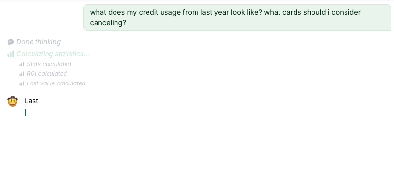
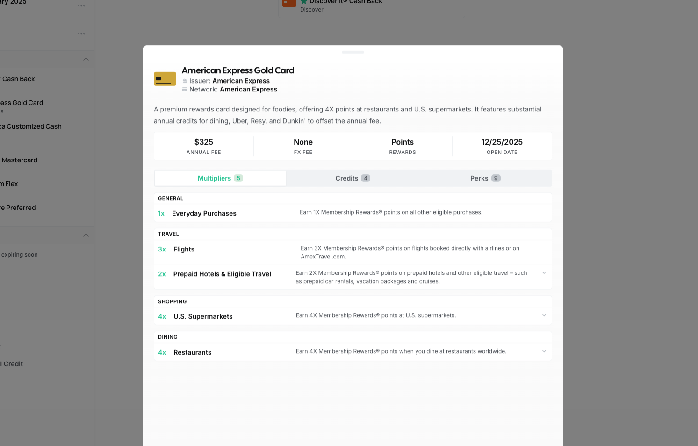
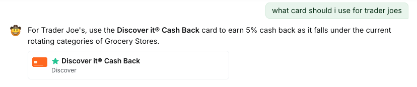
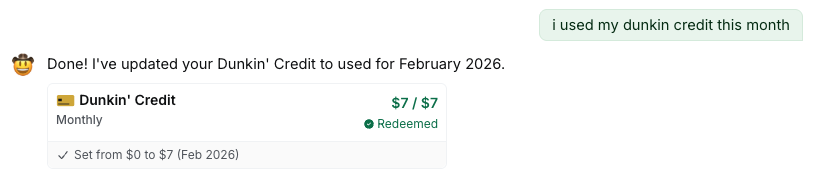
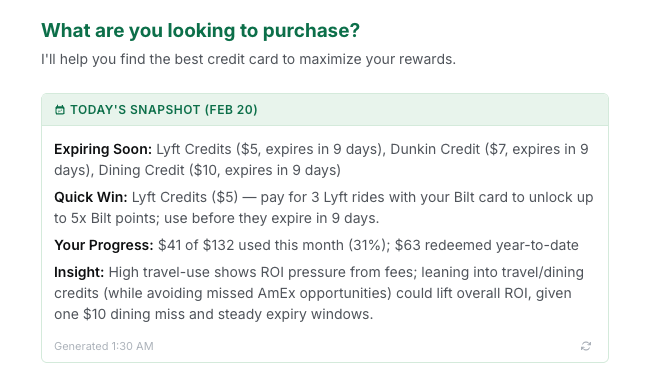

The Problem
I have way too many credit cards. Each one has its own rewards structure, bonus categories, statement credits, and annual perks. Keeping track of which card to use for groceries versus gas versus dining out, remembering to activate quarterly categories, and making sure I actually use all those annual credits before they expire. It honestly felt like a part-time job.
Most people leave hundreds of dollars in rewards on the table each year because it's just too much to keep in your head. I tried spreadsheets for a while, but they can't keep up with rotating categories, and they definitely can't tell you which card to pull out when you're standing in the grocery store checkout line. I wanted to build something that could actually reason about your whole wallet, and that meant building an AI system, not just a lookup table.

My Credits page tracking statement credits across all cards
Multi-Agent Architecture
I started with a single AI agent that handled everything: spend recommendations, credit tracking, card management, all of it. It didn't work well. The agent would try to do too many things at once and give unfocused answers. If you asked about your best dining card, it would also pull in credit info and stats you didn't ask for. So I split it up.
ReCard is now a LangGraph multi-agent system where each agent owns a specific domain. In orchestrated mode, 6 specialized agents handle incoming queries:
- Spend Agent: recommends the best card for a purchase using pre-loaded wallet data, no tool calls needed.
- Credit Agent: tracks statement credits, expiring benefits, and redemption history.
- Card Agent: read-only wallet info like renewals, card details, and annual fees.
- Stats Agent: usage analytics, ROI calculations, and savings metrics.
- Action Agent: write operations like marking credits as used, freezing cards, or managing your wallet.
- Chat Agent: general conversation, card catalog lookups, and help.
A Composer node sits at the end of the graph and merges multi-agent outputs into one coherent response. This matters because some queries touch multiple domains, like "what's my best dining card and do I have any credits expiring?" hits both Spend and Credit, and you shouldn't see two separate answers.

Multi-agent timeline streaming stats, ROI, and lost value calculations
I also wanted to test whether all this complexity was actually worth it, so I built a Simplified mode with a single Advisor agent that dynamically injects tools based on the query. This gave me a clean A/B comparison between the two approaches, which turned out to be really useful for measuring whether splitting things up actually improved response quality (it did).
Intelligent Routing
So how does the system figure out which agent should handle your question? With 6 agents, if a query goes to the wrong one, the response is useless. I needed a routing pipeline that was both fast and accurate, so I built it in three phases:
Query Rewriting
Short or vague queries get expanded using conversation history. So if you just type "What about Amex?" the system rewrites that to something like "What statement credits are available on my American Express Gold card?" This step alone eliminated a huge class of misroutes.
Semantic Routing
I embed the rewritten query and compare it against a bank of example questions for each agent using cosine similarity. This runs in about 50-100ms. If the top match scores above 0.75 confidence, we route directly with no LLM call needed. Most queries resolve here, which keeps things fast.
LLM Routing
For the trickier queries where semantic matching isn't confident enough, the top-2 candidate agents each run a self-assessment to claim or decline the query. This is slower but catches edge cases that embedding similarity misses. So if you ask something like "should I cancel my Sapphire Reserve?", that could be a card question or a stats question, and the agents themselves figure out who's better equipped. The result is that most users get sub-100ms routing, while the harder queries still land in the right place.
Tool System
The agents need to actually do things, not just talk. When you ask ReCard to mark a credit as used or tell you your ROI, it's calling real tools that read and write to your data. I built 25+ structured tools, each validated with Zod schemas, and organized them by domain:
- Card read (6 tools): wallet details, renewals, benefits
- Card write (5 tools): add, remove, freeze, set preferred
- Credit read (4 tools): credit status, expiration, history
- Stats (7 tools): ROI, savings, usage analytics
- Actions (2 tools): mark credits used, bulk operations
- Digest (1 tool): daily summary generation
One thing I learned early on is that giving an agent too many tools made it unfocused, similar to the single-agent problem but at the tool level. So I capped each agent's tool count. The Spend Agent gets zero tools because it reasons from pre-loaded data; the Credit Agent gets 3; the Action Agent gets 5. This kept responses tight and relevant.
In Simplified mode, the single Advisor agent uses dynamic tool injection. It receives a different tool set depending on the detected query domain. This was the main challenge of the single-agent approach: how do you give one agent access to 25+ tools without overwhelming it? Filtering tools by domain turned out to be the answer. But all of these tools are only as good as the card data behind them, and keeping that data accurate is its own challenge.
Managing Credit Card Data
So where does all this card data actually come from? There are hundreds of credit cards on the market, each with dozens of fields like reward rates, annual fees, statement credits, rotating categories, sign-up bonuses. And issuers change things constantly. If the system tells you the Amex Gold earns 4x on dining but Amex quietly bumped it to 4x on restaurants and dropped groceries to 3x, you're getting bad advice and you don't even know it. Garbage in, garbage out. I needed a dedicated admin dashboard for managing card data end-to-end, so I built Card Manager.

Card Manager dashboard with card details, multipliers, credits, and perks
AI-Powered Data Extraction
I was spending hours manually entering card data. Copying reward rates from issuer websites, cross-referencing benefits pages, typing out credit details field by field. It didn't scale. So I built an extraction pipeline: paste raw marketing copy from a card issuer's website and Gemini extracts structured data across 5 data types (card details, credits, perks, multipliers, and rotating categories). What used to take 30 minutes per card now takes about 30 seconds.
Getting clean data out of an LLM is harder than it sounds. LLM outputs are messy: malformed JSON, trailing commas, markdown wrappers, you name it. I built a 6-step JSON parsing fallback chain that handles progressively worse output formats. The extraction rules themselves are loaded from markdown files that teach the AI what to look for per data type, which means I can tweak extraction behavior without touching code. There's also a refinement loop so I can iterate on the output before committing it.
Keeping Data Fresh
Extracting data once isn't enough. I needed to know when reality drifted from what the database said. So I built an AI comparison system that checks stored records against fresh content from issuer websites. It flags mismatches, missing items, and outdated info so I can review changes before they hit the database. When benefits do change, the system creates a new version with effective date ranges rather than overwriting the old data. That way, queries about past card configurations still return accurate results.
Every schema is validated with Zod, from card details down to individual rotating category periods. This is how 25+ tools across 6 agents all trust the data they're reading. It was extracted by AI, validated by schema, and version-controlled with date ranges before any agent ever touches it.
Interactive Chat
I wanted the chat to feel responsive and transparent. Responses stream token-by-token via Server-Sent Events, and there's a real-time agent timeline showing which LangGraph node is currently executing. You can actually watch your query get rewritten, see it route to an agent, and follow the tool calls as they happen. It makes the AI feel less like a black box. I also persisted chat history so you can pick up previous conversations where you left off.
Component Blocks
One of the things I focused on was making the AI responses actionable, not just informational. When the AI recommends a card or finds an expiring credit, it doesn't just tell you about it. Instead, it renders interactive component blocks inline:
- Card components with actions like add, remove, freeze, or set as preferred
- Credit components showing usage status with one-tap mark-as-used
- Perk and multiplier components for quick reference on reward rates

Inline card component rendered in the chat response
The chat doesn't just give you information. It can execute actions too. Tell it you used a credit and it'll update your records on the spot.

Marking a credit as used directly from the chat
AI Digest
This is the feature that makes you actually open the app. The problem it solves is simple: you forget. You forget about that Amex dining credit, you forget that your Hilton free night certificate expires next week, you forget that you haven't used your TSA PreCheck reimbursement. So every morning, ReCard generates a personalized daily summary that appears when you start a new chat. It covers the things that actually matter:
- Credits expiring in the next 7-14 days
- A "Quick Win": the single most actionable credit to use today
- Monthly progress on credit redemption
- Conditional insights on ROI, spending patterns, or missed value

Daily digest with expiring credits, quick win, and monthly progress
During the first few days of each month, you also get a rundown of newly refreshed credits and a recap of what you missed last month. The digest is cached daily in Firebase and refreshes at midnight ET. The goal is simple: you open the app and immediately know if there's something you should act on today.
Evaluations
If the AI tells you to use the wrong card for a purchase, or says a credit has expired when it hasn't, that erodes trust immediately. So how do I know the system is actually giving good answers? I set up a LangSmith evaluation pipeline with both code-based and LLM-based evaluators.
Code-Based Evals
These check for objective things: does the response contain expected content, is it an appropriate length, does it include the right component blocks? They're fast and deterministic, which makes them easy to run on every change.
LLM-Based Evals
These score responses on relevance, accuracy, helpfulness, and clarity on a 0-1 scale. I also built dedicated safety and correctness judges that specifically flag hallucinated card benefits or incorrect reward rates. That kind of mistake is the worst thing this system can do, so I wanted a dedicated check for it.
Latency Benchmarks
I track response latency against tiered thresholds: excellent under 500ms, good under 2s, acceptable under 5s. All evals run against curated datasets with fixture data, so results are reproducible and I can catch regressions quickly.
Current Status: Beta
ReCard is currently in beta and free to use. The entire experience is optimized for mobile. The chat, digest, credits, and card manager all work well on a phone, which matters because the whole point is to have the right answer when you're standing at the register. I'm actively shipping improvements to the agent pipeline, adding new tools, and refining the eval suite. The goal is to make credit card optimization effortless for everyone, not just the rewards enthusiasts who spend hours on forums and spreadsheets. Next up, I'm working on expanding the card catalog and adding support for business cards.